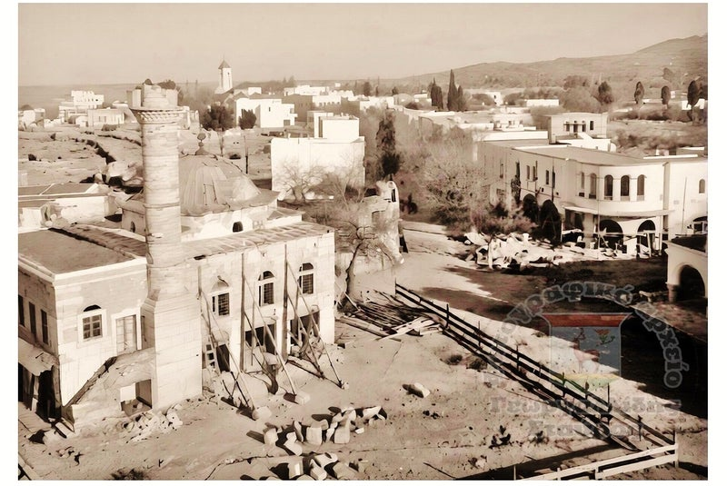
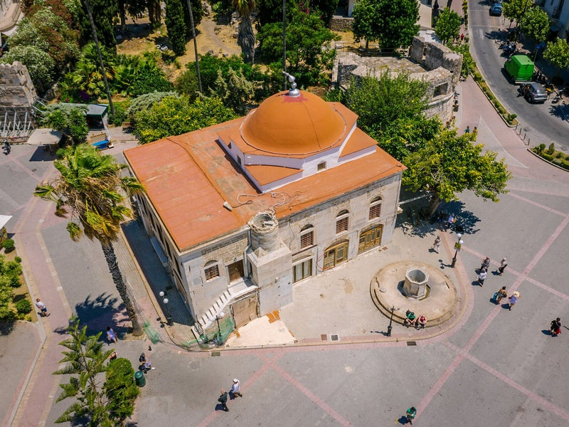
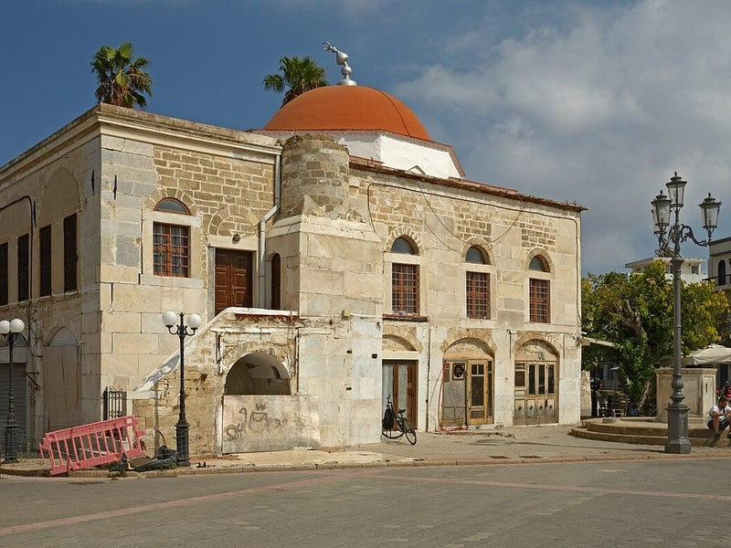
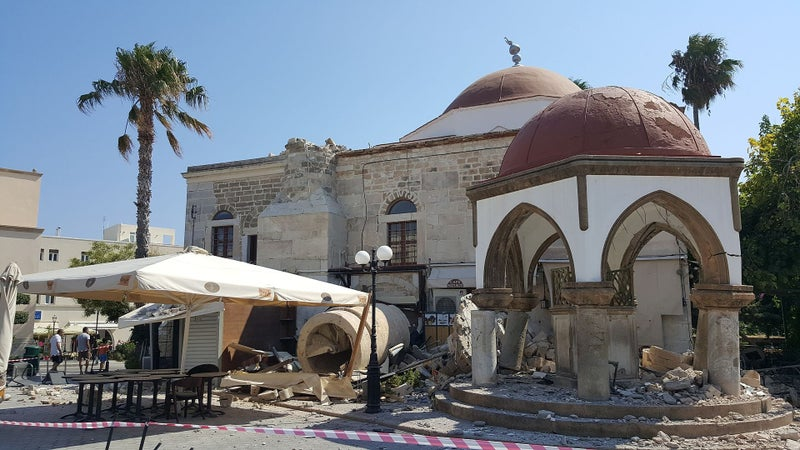
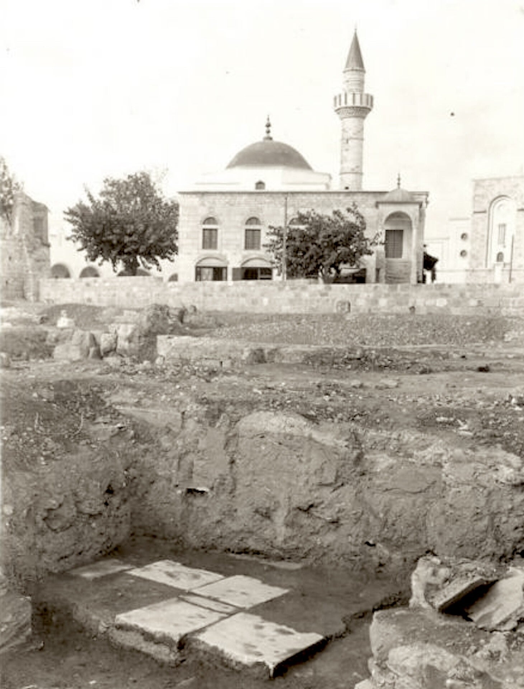
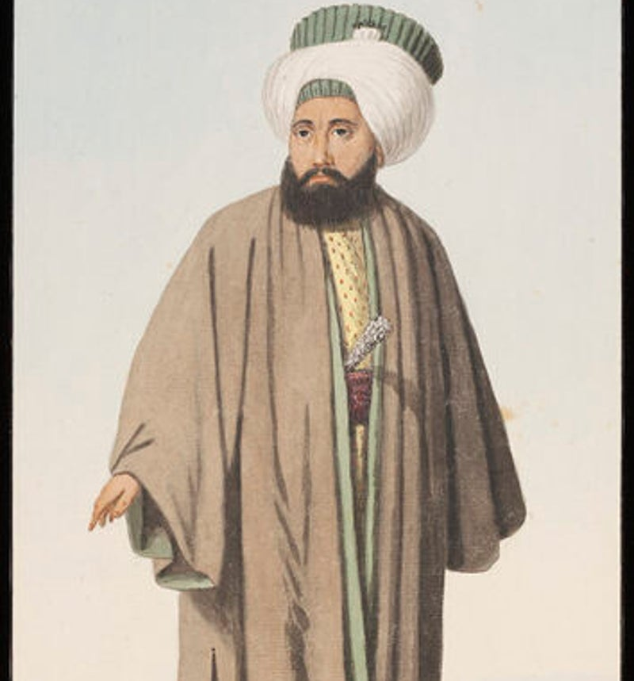

Defterdar moskee
Ottomaanse moskee op Eleftherias-plein – gerestaureerd en weer open voor bezoekers.
Weer te bezoeken
De Defterdar Moskee staat op Eleftherias-plein in het hart van Kos-stad. Na de aardbeving van 2017 en een grote restauratie is de moskee weer in gebruik en te bezoeken.
Binnen zie je de gebedszaal met witte zuilen, bogen, een groene koepel en het typische blauwe gebedstapijt.

Wie was Defterdar?
De moskee is vernoemd naar Defterdar Haci Ibrahim Efendi. Een defterdar was de minister van financiën van het Ottomaanse Rijk. Hij financierde de moskee uit eigen middelen.
Geschiedenis
Gebouwd in de 18e eeuw op de resten van een oudere christelijke kerk (vermoedelijk Sint Paraskevi). Kenmerkend is de rode koepel aan de buitenkant.
In 2017 stortte de minaret in door de aardbeving. Na restauratie (circa € 1,5 miljoen) is het gebouw weer toegankelijk.
Binnen
Witte zuilen en bogen, groene koepel met kroonluchter, ronde kalligrafieplaten aan de muren, mihrab en minbar. Het blauwe tapijt met ornamenten dekt de hele gebedsvloer.
 Gebedsruimte met groene koepel
Mihrab en minbar
Gebedsruimte met groene koepel
Mihrab en minbar

Interieur met zuilen
Overzicht gebedszaal
Zuilengalerij
Naar de uitgang
Bogen en koepel
Ingang met trap Zijruimte
Zijruimte
Bezoeken
Op Eleftherias-plein. Trek schoenen uit bij binnenkomst (gebruikelijk in moskeeën). Wees stil en respectvol – het is weer een gebedshuis.